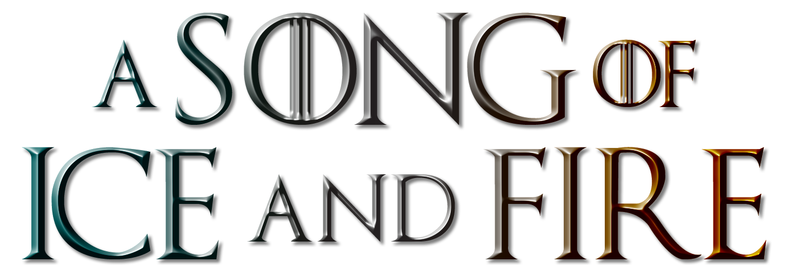
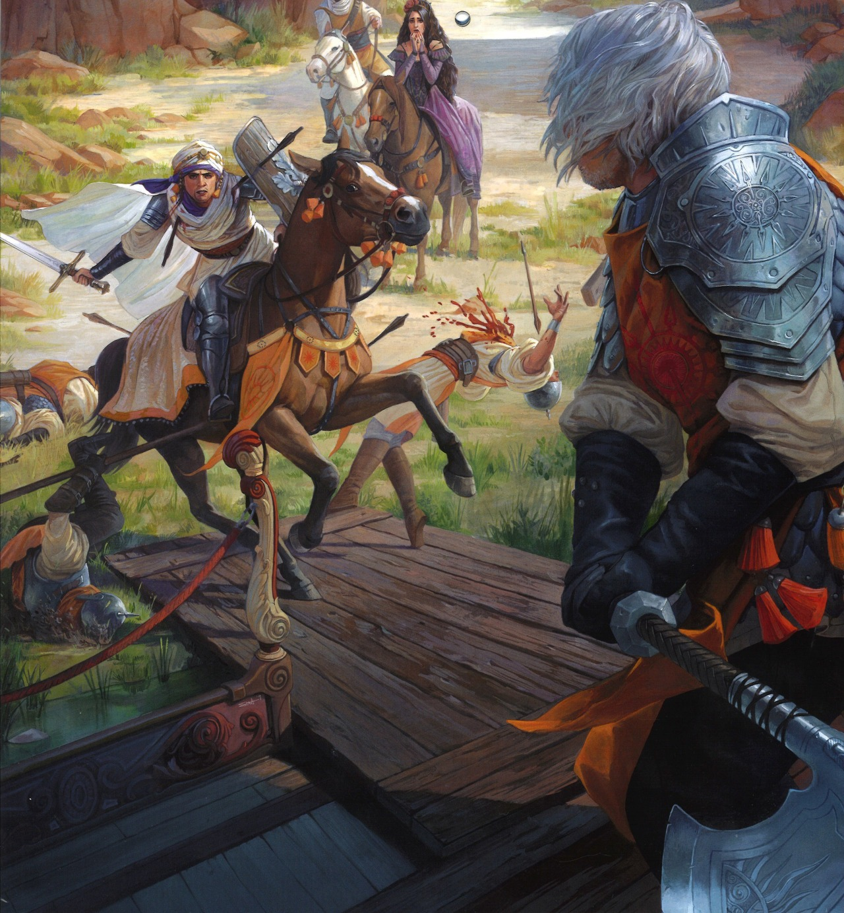
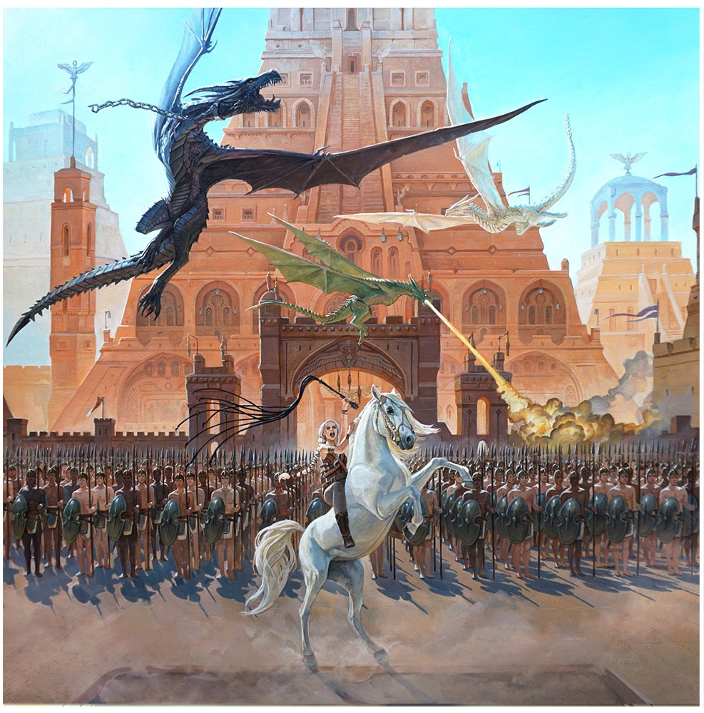
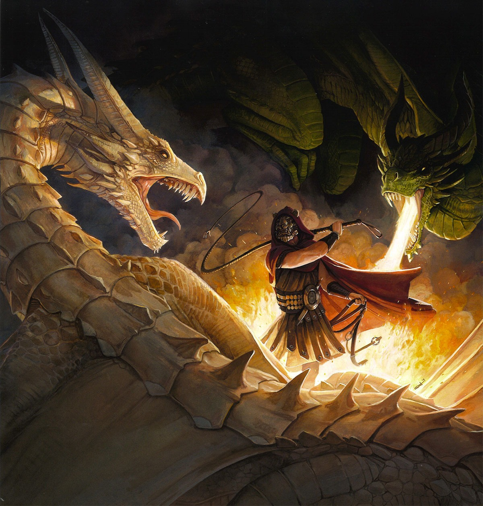

O verão pode durar décadas. O inverno, toda uma vida. E a guerra dos tronos começou. Como Guardião do Norte, lorde Eddard Stark não fica feliz quando o rei Robert o proclama a nova Mão do Rei. Sua honra o obriga a aceitar o cargo e deixar seu posto em Winterfell para rumar para a corte, onde os homens fazem o que lhes convém, não o que devem... e onde um inimigo morto é algo a ser admirado. Longe de casa e com a família dividida, Eddard se vê cada vez mais enredado nas intrigas mortais de Porto Real, sem saber que perigos ainda maiores espreitam a distância. Nas florestas ao norte de Winterfell, forças sobrenaturais se espalham por trás da Muralha que protege a região. E, nas Cidades Livres, o jovem Rei Dragão exilado na Rebelião de Robert planeja sua vingança e deseja recuperar sua herança de família: o Trono de Ferro de Westeros.

Um cometa da cor de fogo e sangue corta os céus. E, da antiga cidadela de Pedra do Dragão às costas áridas de Winterfell, reina o caos. Em A fúria dos reis , seis facções disputam o controle de uma terra dividida e o direito de ocupar o Trono de Ferro de Westeros – e estão dispostos a encarar tempestades, levantes e guerras para isso. Nesta história, irmão trama contra irmão e os mortos se levantam para caminhar pela noite. Aqui, uma princesa se disfarça de menino órfão, um cavaleiro se prepara para encarar uma pérfida feiticeira e bárbaros descem das Montanhas da Lua para saquear os campos. Em um contexto de incesto e fratricídio, alquimia e assassinato, a vitória será dos homens e mulheres que possuírem o mais frio aço... e o mais frio coração. Pois, quando se desperta a fúria dos reis, a terra inteira treme.
O futuro de Westeros está em jogo, e ninguém descansará até que os Sete Reinos tenham explodido em uma verdadeira tormenta de espadas. Dos cinco pretendentes ao trono, um está morto e outro caiu em desgraça, e ainda assim a guerra continua em toda sua fúria, enquanto alianças são feitas e desfeitas. Joffrey, da Casa Lannister, ocupa o Trono de Ferro, como o instável governante dos Sete Reinos, ao passo que seu rival mais amargo, lorde Stannis, jaz derrotado e enfeitiçado pelas promessas da Mulher Vermelha. O jovem Robb, da Casa Stark, ainda comanda o Norte, contudo, e planeja sua batalha contra os Lannister, mesmo que sua irmã seja refém deles em Porto Real. Enquanto isso, Daenerys Targaryen atravessa um continente deixando um rastro de sangue a caminho de Westeros, levando consigo os três únicos dragões existentes em todo o mundo. Enquanto forças opostas avançam para uma gigantesca batalha final, um exército de selvagens chega dos confins da civilização. Em seu rastro vem uma horda de terríveis criaturas místicas – os Outros: um batalhão de mortos-vivos cujos corpos são imparáveis
Há séculos os sete grandes reinos de Westeros se enfrentam em amargas disputas, batalhas e traições. Agora, com Joffrey Baratheon e Robb Stark fora da jogada e lordes insignificantes competindo pelas Ilhas de Ferro, a guerra que devorou o continente parece ter finalmente chegado ao fim. No entanto, como após todo grande conflito, não demora para que os sobreviventes, os bandidos, os renegados e os carniceiros avancem para disputar o espólio dos mortos. Por toda Westeros os lordes se agitam, formando alianças e fazendo planos, enquanto nomes conhecidos e desconhecidos se apresentam para tomar parte das danças políticas. Todos precisam lançar mão de suas habilidades e poderes para encarar os tempos de terror que se aproximam. Nobres e plebeus, soldados e feiticeiros, assassinos e saqueadores devem arriscar suas fortunas... e suas vidas, pois em um festim de corvos, muitos são os convidados ― e poucos os sobreviventes.
É outono em Westeros, e a Guerra dos Cinco Reis parece finalmente entrar na reta final. Stannis Baratheon se instala no Norte e jura conquistar o apoio dos senhores da região para continuar sua luta pelo trono, embora seja atrapalhado pela invasão de homens de ferro em grande parte da costa. Na Muralha, Jon Snow é eleito o 998º Senhor Comandante da Patrulha da Noite, mas inimigos o cercam de todos os lados, tanto na Patrulha quanto para além da Muralha. Enquanto isso, Tyrion Lannister atravessa o Mar Estreito rumo a Pentos, sem objetivos definidos, sem aliados e cada vez mais sem opções. Na Baía dos Escravos, Daenerys Targaryen conquista a cidade de Meereen e decide ficar e governá-la, praticando as habilidades de liderança que serão tão necessárias quando partir para Westeros. No entanto, sua presença já foi notada por muitos senhores nos Sete Reinos, e das Ilhas de Ferro e de Dorne, de Vilavelha e das Cidades Livres, emissários estão a caminho, querendo se unir à sua causa e, se possível, usá-la para os próprios fins. Em todos os cantos conflitos ganham vida e traições vêm daqueles mais próximos. Guerreiros, selvagens, nobres e escravos – todos têm pela frente um longo inverno, enquanto destino, ambição e política ditam o ritmo da dança mais perigosa de todas.
A Casa Stark de Winterfell é uma das mais antigas e nobres casas de Westeros. Sua linhagem remonta aos Primeiros Homens, e eles governam o Norte há milhares de anos. O lema da casa é "O Inverno Está Chegando", refletindo a dureza do clima do Norte e a necessidade de estar sempre preparado para tempos difíceis. Os Stark são conhecidos por sua honra, lealdade e senso de dever, muitas vezes colocando o bem-estar de seu povo acima de seus próprios interesses.